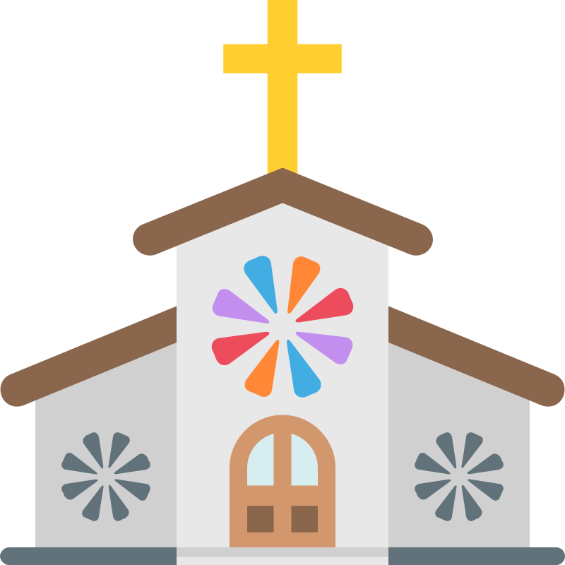

MARY HELP OF CHRISTIANS PARISH
A place to belong, grow, and serve. Join us in worship, community, and mission every week.

A place to belong, grow, and serve. Join us in worship, community, and mission every week.
Mary Help of Christians Parish is a vibrant Catholic community dedicated to celebrating the presence of God through the Sacraments, service, and fellowship. We welcome everyone to join our journey of faith, love, and compassion.
Whether you're visiting, returning to the Church, or seeking a new spiritual home, our doors and hearts are open to you. Together, we grow closer to Christ, serve the poor, and build a community of faith rooted in prayer and service.
Our community gathers around the Word of God and the Sacraments, growing in faith together.
Everyone is welcome. We strive to be a spiritual home where all find peace, friendship, and belonging.
Rooted in Scripture, our teachings inspire deeper understanding and practical application of God’s Word.
Engaging liturgy and music that lifts the heart and invites real encounters with Christ.
We live our faith in action — through outreach, charity, and evangelization in our city and beyond.
Programs for kids, teens, and parents to grow in faith as families united in Christ.
Natukod isip parokya sa tuig 1999, sa panahon ni kanhi Ricardo Cardinal Vidal. Gilangkuban sa tulo ka barangays: Buhisan, Toong ug Pamutan.
Ang Buhisan sakop kanhi sa parokya sa Birhen sa Lourdes, Punta Princesa og gitawag ang Buhisan nga Area 9 sa parokya. Ang Toong ug Pamutan sakop kanhi sa Sto. Tomas de Villanueva Parish.
Sa dihang natukod nga parokya ang Holy Cross Parish, ang Toong ug Pamutan gihimong sakop usab niini.
Aduna gani kapilya sa Pamutan nga natukod nga may pagtugot sa Birhen sa Guadalupe Parish. Naa poy usa ka kapilya sa Pamutan nga natukod nga may pagtugot sa Alliance of Two Hearts sa Banawa.
Ang katawhan sa Dios nga Amahan, Anak, ug Espiritu Santo, inubanan ni Maria, Magtatabang sa mga Kristyanos, nangandoy ug naglantaw nga mamahimong kasangkapan sa pagpatunhay ug pagpanday sa Gingharian sa Ginoo pinaagi sa pagpakaylap sa mga mithi sa kaangayan, kalooy, kahiusahan, pag-atiman sa kinaiyahan ug kalikupan ug sa uban pang mga mithi sa Maayong Balita sa mga nahisakupang Katoliko-Kristyanong katilingban sa Buhisan, Toong ug Pamutan.
“We are not a perfect church, but we serve a perfect God. You are welcome here — to grow, to heal, to belong. Let’s walk in faith together.”
— Pastor John David